Quando o assistente deve dizer “isso não é comigo”?
Redes convolucionais e a classe de fala fora do escopo
Daniel Urbani, Lucas Moreira Rizzi e Pedro Novaes Neto

Acionamentos indevidos
O sistema ouve tudo o que é dito na sala
Um assistente residencial treinado só com os seis comandos sempre escolhe algum deles, mesmo quando alguém fala outra coisa. Na prática, a luz acende sozinha.
A saída clássica é um limiar de confiança: abaixo dele, o sistema ignora o áudio. Mas isso basta?
Adicionar exemplos de fala fora do escopo ao treinamento reduz a falsa aceitação sob ruído, sem prejudicar o reconhecimento dos comandos válidos?
Nosso próprio conjunto de dados
Coleta online com voluntários
Criamos um site de coleta: cada participante aceita o termo de consentimento, informa sexo e idade e grava as seis frases duas vezes, no próprio celular ou computador.
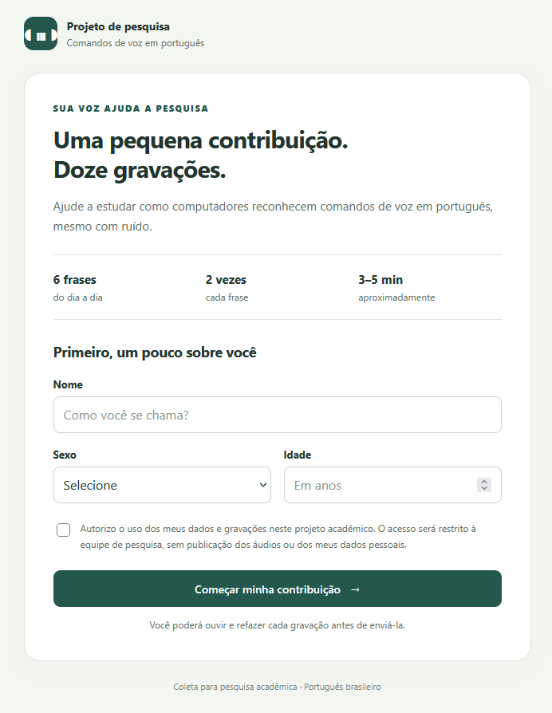
Quem gravou os comandos
24 mulheres, 17 homens · idade média de 42 anos

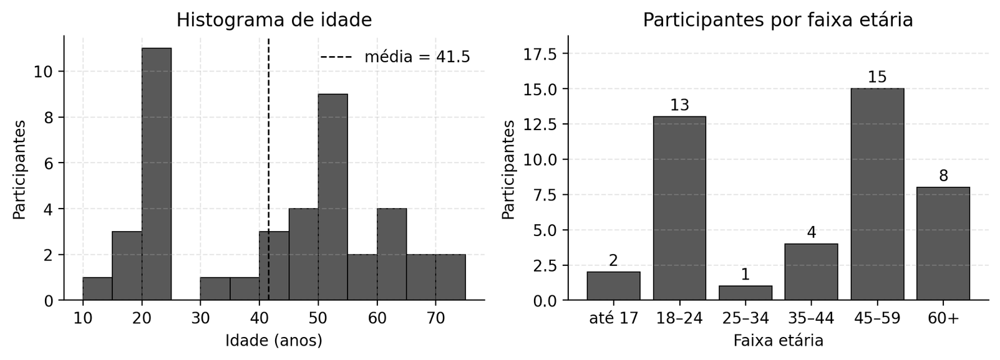
Comandos, falas e ruído
As falas do Common Voice foram filtradas para não conter palavras dos comandos, com no máximo 3 clipes por locutor.
Ruídos do MUSAN somados a 20, 10 e 0 dB de SNR: cada áudio aparece limpo e em três níveis de ruído.
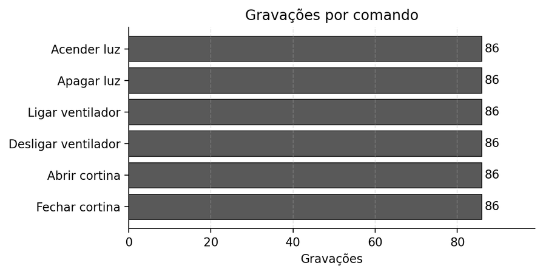
Separação por locutor
60% treino · 20% validação · 20% teste
- Todas as gravações de uma pessoa ficam na mesma partição: a avaliação sempre usa vozes nunca ouvidas.
- Os ruídos do MUSAN também são divididos: o teste usa ruídos inéditos.
- Escolhas de modelo e de limiar feitas só na validação; o teste fica reservado para o fim.

Do celular ao modelo
O mesmo tratamento para todos os modelos
O espectrograma log-Mel
Transformar o som em uma imagem
- O áudio é cortado em quadros de 25 ms, a cada 10 ms.
- A FFT mostra quais frequências existem em cada quadro.
- 40 filtros na escala Mel agrupam as frequências como o ouvido humano: mais detalhe nos graves.
- O logaritmo comprime a energia, imitando a percepção de volume.
Resultado: uma “imagem” de 40 × 201 por áudio, tempo na horizontal e frequência na vertical.
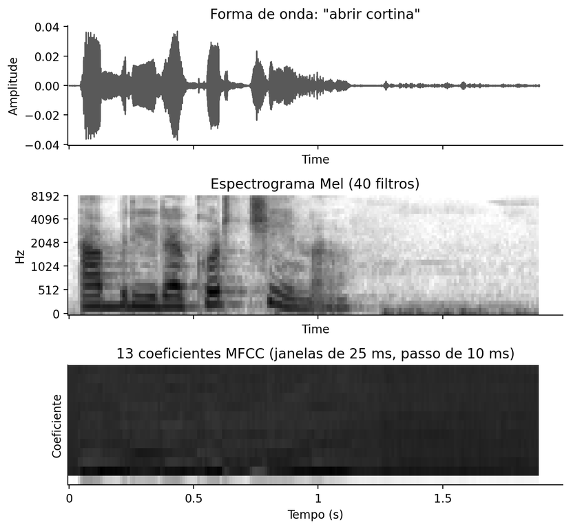
MFCC: o log-Mel resumido
Uma etapa a mais: a DCT
- DCT do log-Mel → 13 coeficientes por quadro
- Média e desvio no tempo: 52 valores
- Compacto, mas perde a ordem dos sons
- A imagem inteira, sem resumir
- 8 040 valores por áudio
- A rede aprende onde e quando cada som aparece
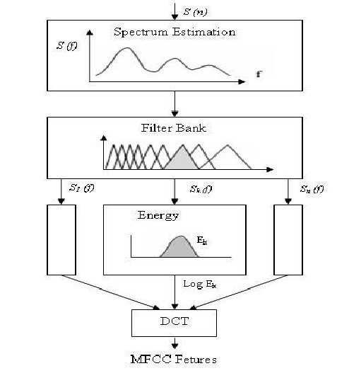
O baseline
Regressão logística sobre MFCC + limiar
Treinada só com os seis comandos, com versões limpas e com ruído. Regularização escolhida pela perda de validação e parada antecipada.
Para rejeitar falas inválidas, usa um limiar de confiança, escolhido na validação minimizando falsa aceitação + falsa rejeição.
Arquitetura da CNN
≈ 420 mil parâmetros · mesma rede para as duas condições
BN · ReLU · pool
BN · ReLU · pool
BN · ReLU · pool
mantém 8 trechos de tempo
Duas redes, um único fator
Mesma arquitetura, mesmo treino, mesmo limiar. Só muda a classe “fora”.
- 6 saídas: os comandos
- Nunca vê uma fala fora do escopo no treino
- Rejeita quando a confiança fica abaixo do limiar
- 7 saídas: os comandos e “fora do escopo”
- Treinada também com as falas do Common Voice
- Rejeita se prever “fora” ou se a confiança ficar abaixo do limiar
Avaliação em áudio limpo e a 20, 10 e 0 dB · macro-F1 dos comandos, falsa aceitação (FA) e falsa rejeição (FR) · média ± desvio em 3 sementes
Como a rede chegou lá
Cada ajuste decidido pela perda de validação
A primeira versão ficou abaixo do baseline. As curvas mostravam treino instável e subajuste. Os ajustes foram aplicados igualmente nas duas redes.
Macro-F1 da CNN B no áudio limpo (validação)
Desempenho por nível de ruído
A CNN B lidera em reconhecimento e quase não rejeita comandos válidos
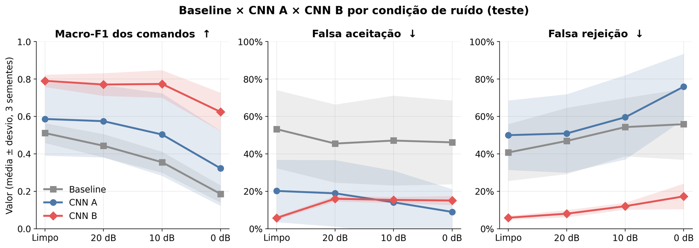
O ganho em números
Conjunto de teste · áudio limpo e ruído forte · média de 3 sementes
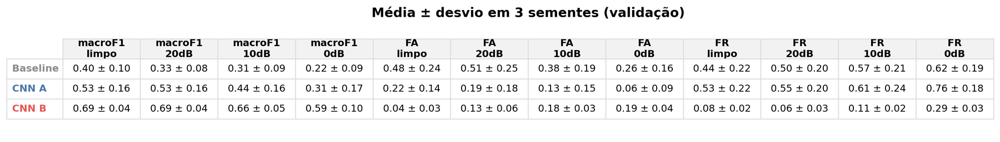
Quantas falas inválidas passam
No limpo e a 20 dB, a CNN B aceita bem menos falas inválidas que a A.
A 10 e 0 dB, a CNN A tem FA menor, mas só porque rejeita de 60% a 76% dos comandos válidos: o limiar dela precisou subir para perto de 1.
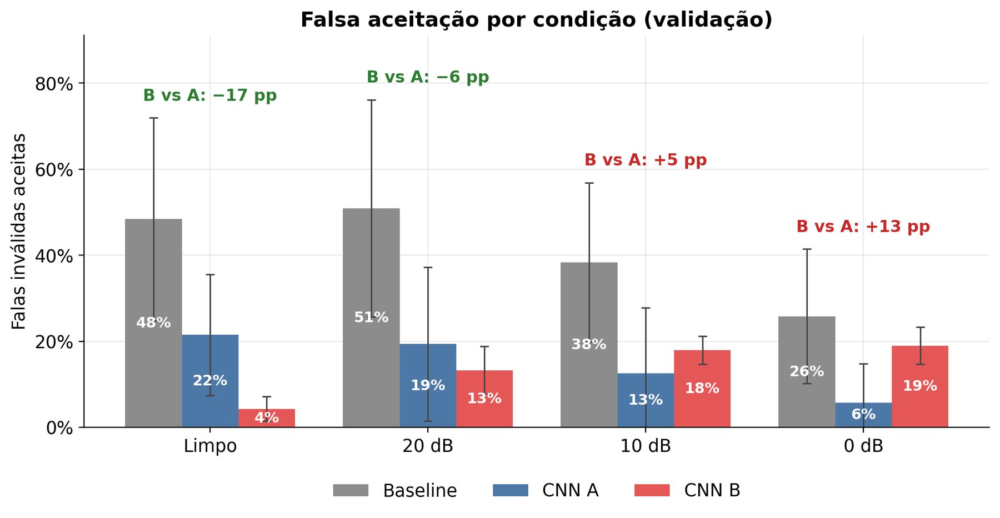
Para onde vai cada áudio
A coluna “rejeitar” mostra o limiar em ação
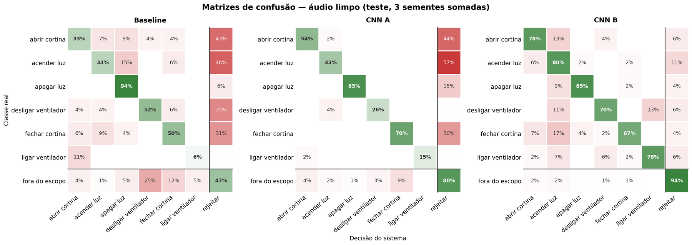
O que ela acerta e onde erra
- 94% das falas fora do escopo são rejeitadas.
- Todos os comandos têm acerto entre 67% e 85%; “apagar luz” é o mais reconhecido.
- “Desligar ventilador” às vezes vira “ligar ventilador” (13%): as palavras diferem só no início.
- “Fechar cortina” é o mais difícil: 17% vão para “acender luz”.
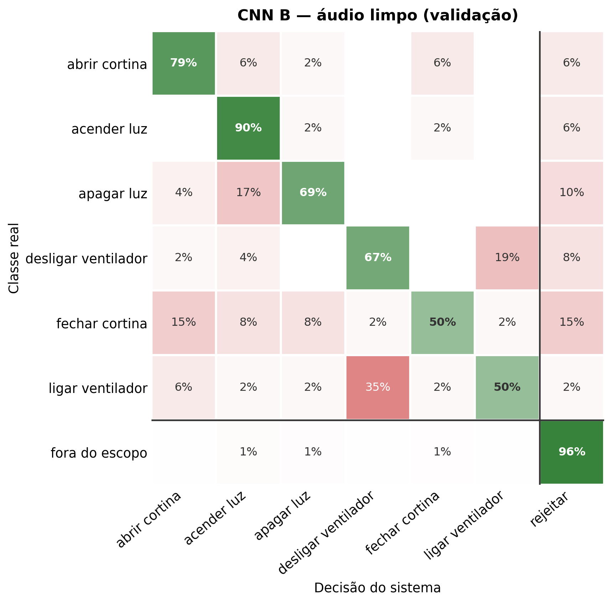
Com ruído tão forte quanto a voz
A CNN B continua reconhecendo; as outras quase só rejeitam ou erram
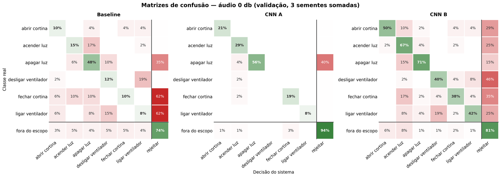
Reconhecer bem e aceitar pouco
Cada ponto é um modelo em uma condição de ruído. O ideal é o canto superior esquerdo.
A CNN B ocupa sozinha a região de F1 alto e FA baixa. O baseline fica no canto oposto.
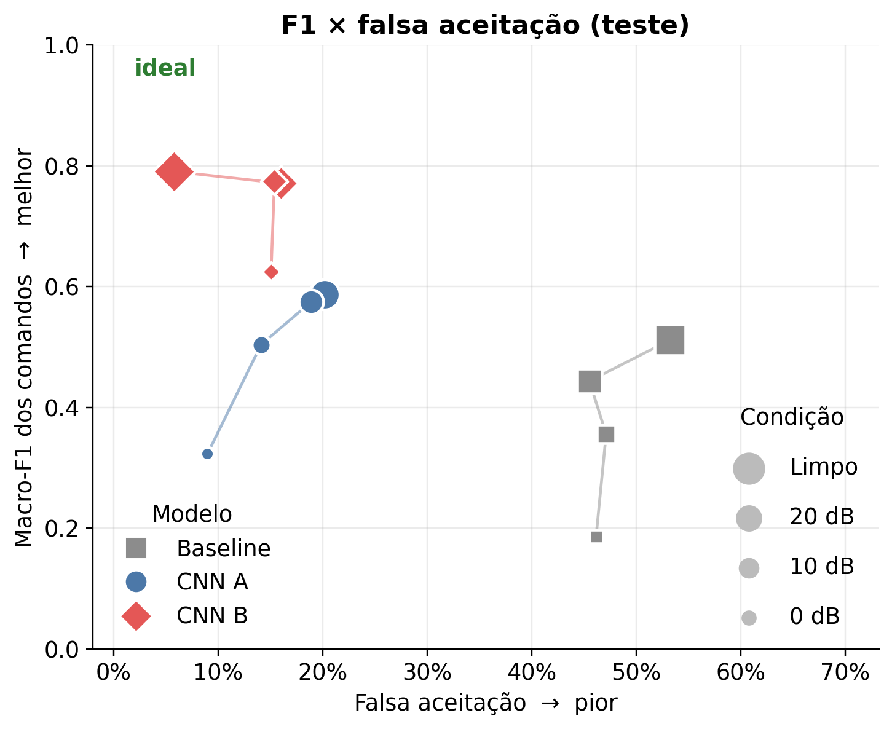
A classe “fora” trouxe vantagem?
Regra: reduzir a FA em ≥ 2 pp em relação à CNN A sem perder mais de 2 pp de macro-F1.
Limpo e 20 dB: vantagem clara. 10 e 0 dB: pela regra, não, embora o F1 suba 27 e 30 pp.
A regra compara modelos em pontos de operação diferentes: a CNN A só tem FA baixa no ruído forte porque rejeita a maioria dos comandos.
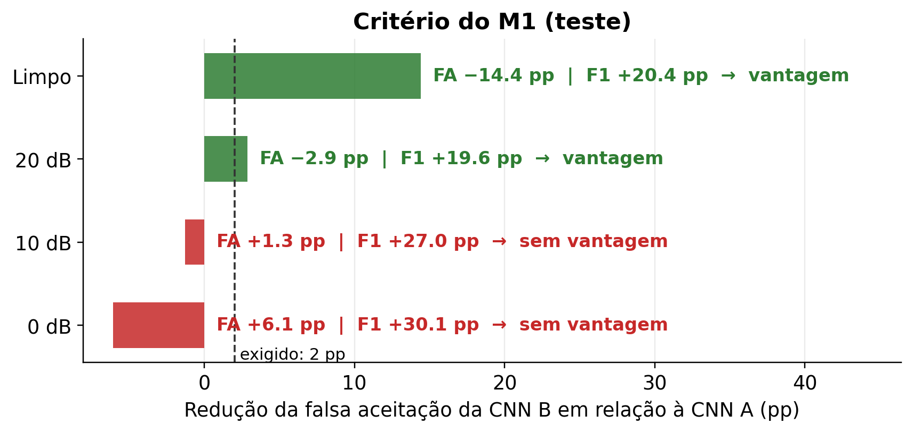
O que aprendemos
- Só o limiar não basta. Treinada só com comandos, a rede fica confiante também nas falas inválidas.
- A classe “fora” ensina a recusar sem descartar os comandos verdadeiros: FA e FR de 6% no limpo (teste).
- A CNN supera o baseline em todas as condições, mas só depois de ajustar normalização, capacidade e regularização.

O que ainda falta
- Poucos participantes: 8 vozes na validação e 9 no teste
- Negativos “fáceis”: falas do Common Voice, diferentes dos comandos
- Validação oscilante e sobreajuste remanescente
- Ajustes da CNN escolhidos na mesma validação
- Comparar os modelos com a mesma taxa de falsa rejeição
- Negativos difíceis gravados: “acende a vela”, “abre a janela”
- Mais participantes e repetições
- Modelos pré-treinados em fala
Bibliografia
ARDILA, R.; BRANSON, M.; DAVIS, K.; HENRETTY, M.; KOHLER, M.; MEYER, J.; MORAIS, R.; SAUNDERS, L.; TYERS, F. M.; WEBER, G. Common Voice: a massively-multilingual speech corpus. In: CONFERENCE ON LANGUAGE RESOURCES AND EVALUATION (LREC), 12., 2020, Marselha. Proceedings [...]. Marselha: ELRA, 2020. p. 4211–4215.
MOZILLA FOUNDATION. Common Voice Scripted Speech 23.0 – Portuguese. Mozilla Data Collective, 2025. Licença CC0-1.0. Disponível em: https://datacollective.mozillafoundation.org. Acesso em: 18 nov. 2026.
PARK, D. S.; CHAN, W.; ZHANG, Y.; CHIU, C.-C.; ZOPH, B.; CUBUK, E. D.; LE, Q. V. SpecAugment: a simple data augmentation method for automatic speech recognition. In: INTERSPEECH, 2019. Proceedings [...]. 2019. p. 2613–2617.
SAINATH, T. N.; PARADA, C. Convolutional neural networks for small-footprint keyword spotting. In: INTERSPEECH, 2015. Proceedings [...]. 2015. p. 1478–1482.
SIDHU, M. S.; LATIB, N. A. A.; SIDHU, K. K. MFCC in audio signal processing for voice disorder: a review. Multimedia Tools and Applications, Springer, 2024. DOI: 10.1007/s11042-024-19253-1.
SNYDER, D.; CHEN, G.; POVEY, D. MUSAN: a music, speech, and noise corpus. arXiv:1510.08484, 2015. Disponível em: https://arxiv.org/abs/1510.08484. Acesso em: 18 nov. 2026.